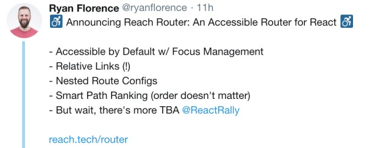

<!DOCTYPE html>
<html lang="en">
<head>
  <meta charset="utf-8">
  
  <title>Reach-Router“真香👍” | lqs469</title>
  <meta name="viewport" content="width=device-width, initial-scale=1, maximum-scale=1">
  <meta name="description" content="Reach-Router 是前 ReactRouter 成员 Ryan Florence 开发的一套基于 react 的路由控件. 那么已经有比较成熟的 ReactRouter 了, 为什么要”再”做一套 Router 呢, 最初的原因有兴趣(hào shi)的同学可以去了解一下, 本文会介绍 ReachRouter 并且说明具体比 React-Router 好在哪里.  Overview">
<meta property="og:type" content="article">
<meta property="og:title" content="Reach-Router“真香👍”">
<meta property="og:url" content="http://yoursite.com/2018/06/05/Reach-Router“真香👍”/index.html">
<meta property="og:site_name" content="lqs469">
<meta property="og:description" content="Reach-Router 是前 ReactRouter 成员 Ryan Florence 开发的一套基于 react 的路由控件. 那么已经有比较成熟的 ReactRouter 了, 为什么要”再”做一套 Router 呢, 最初的原因有兴趣(hào shi)的同学可以去了解一下, 本文会介绍 ReachRouter 并且说明具体比 React-Router 好在哪里.  Overview">
<meta property="og:image" content="http://yoursite.com/2018/06/05/Reach-Router“真香👍”/3910365c6be928469d0afb130c0ccee3.gif">
<meta property="og:image" content="http://yoursite.com/2018/06/05/Reach-Router“真香👍”/7B44554A-6DDF-4F85-B1C8-263D85F6EB43.png">
<meta property="og:updated_time" content="2018-06-05T07:06:34.407Z">
<meta name="twitter:card" content="summary">
<meta name="twitter:title" content="Reach-Router“真香👍”">
<meta name="twitter:description" content="Reach-Router 是前 ReactRouter 成员 Ryan Florence 开发的一套基于 react 的路由控件. 那么已经有比较成熟的 ReactRouter 了, 为什么要”再”做一套 Router 呢, 最初的原因有兴趣(hào shi)的同学可以去了解一下, 本文会介绍 ReachRouter 并且说明具体比 React-Router 好在哪里.  Overview">
<meta name="twitter:image" content="http://yoursite.com/2018/06/05/Reach-Router“真香👍”/3910365c6be928469d0afb130c0ccee3.gif">
  
  
    <link rel="icon" href="/favicon.ico">
  
  <link rel="stylesheet" href="/css/typing.css">
  
</head>

  
    
      <body>
    
  
      <div id="container" class="container">
        <article id="post-Reach-Router“真香👍”" class="article article-type-post" itemscope itemprop="blogPost">
  <header id="header" class="header">
  <nav id="main-nav" class="main-nav">
    
      <a class="main-nav-link" href="/">Home</a>
    
      <a class="main-nav-link" href="/archives">Archives</a>
    
      <a class="main-nav-link" href="/about">About</a>
    
  </nav>
</header>

  <hr/>
  <div class="article-inner">
    
    
      <header class="article-header">
        
  
    <h1 class="article-title" itemprop="name">
      Reach-Router“真香👍”
    </h1>
  

      </header>
    
    <div class="article-entry typo" itemprop="articleBody">
      
        <p></p>
<blockquote>
<p><a href="https://reach.tech/router" target="_blank" rel="external">Reach-Router</a> 是<strong>前</strong> ReactRouter 成员 Ryan Florence 开发的一套基于 react 的路由控件. 那么已经有比较成熟的 ReactRouter 了, 为什么要”再”做一套 Router 呢, 最初的原因有兴趣(hào shi)的同学可以去了解一下, 本文会介绍 ReachRouter 并且说明具体比 React-Router 好在哪里.</p>
</blockquote>
<h2 id="Overview"><a href="#Overview" class="headerlink" title="Overview"></a>Overview</h2><p></p>
<p>从 RF 的 Tweet 上简单的发布可以看出来, ReachR (以下都简称 ReachR)主打的是:</p>
<ul>
<li>Accessibility, 也就是无障碍, 易用性.</li>
<li>相对链接的跳转方式.</li>
<li>嵌套的路由配置.</li>
<li>合适的路径优先(顺序不会造成影响).</li>
<li>…</li>
</ul>
<p>我们先不管这些 features 到底是什么, 我们先来看一看 ReachR 的设计意图: 根据作者的<a href="https://reach.tech/router/credits" target="_blank" rel="external">原话</a>, 整个 ReachR 项目是对 ReactR V3 和 V4 两个版本的一些优点的集成以及加入了一些作者一直想要的功能.</p>
<p>那么跟 React-Router 比较一下呢:</p>
<ul>
<li>尺寸. 更少的依赖和更少代码实现够用的功能, ReactR 代码约为 229KB, ReachR 代码为 193KB, 组件依赖也更少.</li>
<li>没有复杂的路由模式. 没有多余的可选参数或类似的东西，只是静态路径，参数和尾随通配符。</li>
<li>不支持 React-Native. 讲道理, 你的路由根本用不上支持 RN.</li>
</ul>
<p>其实我认为最重要的一点, ReachR 比 ReactR 对开发者来讲: <strong>更好用</strong>.</p>
<h2 id="Under-the-hood"><a href="#Under-the-hood" class="headerlink" title="Under the hood"></a>Under the hood</h2><p>那么我们来具体看看 ReachRouter 的 API 设计:</p>
<h3 id="渲染方法"><a href="#渲染方法" class="headerlink" title="渲染方法"></a>渲染方法</h3><p>跟 ReactRouter 不用在于, 在众多路由中只会根据 path 渲染一个最符合条件的子组件.</p>
<figure class="highlight javascript"><table><tr><td class="gutter"><pre><div class="line">1</div><div class="line">2</div><div class="line">3</div><div class="line">4</div><div class="line">5</div><div class="line">6</div></pre></td><td class="code"><pre><div class="line">render(</div><div class="line">  &lt;Router&gt;</div><div class="line">    &lt;Home path=<span class="string">"/"</span> /&gt;</div><div class="line">    &lt;Dash path=<span class="string">"dashboard"</span> /&gt;</div><div class="line">  &lt;<span class="regexp">/Router&gt;</span></div><div class="line"><span class="regexp">)</span></div></pre></td></tr></table></figure>
<p>如图例, 组件直接加参数 path 的写法十分简洁, 当前 url 为 /dashboard 时, 只会渲染 Dash, 而当前 url = ‘/’ 时才会渲染 Home. 在 ReactRouter 中匹配则渲染的方式的确能解决一些组件复用的匹配情况, 然而我们遇到更多的情况则是希望专一的渲染单个组件.</p>
<h3 id="Link-导航"><a href="#Link-导航" class="headerlink" title="Link 导航"></a>Link 导航</h3><p><link> 可以在任何位置放置, 没有限制, 不需要包裹进<router>.</router></p>
<figure class="highlight javascript"><table><tr><td class="gutter"><pre><div class="line">1</div><div class="line">2</div></pre></td><td class="code"><pre><div class="line">&lt;Link to=<span class="string">"/"</span>&gt;Home&lt;<span class="regexp">/Link&gt;</span></div><div class="line"><span class="regexp">&lt;Link to="dashboard"&gt;Dashboard&lt;/</span>Link&gt;</div></pre></td></tr></table></figure>
<h3 id="通配符参数"><a href="#通配符参数" class="headerlink" title="通配符参数"></a>通配符参数</h3><p>通配符参数会直接注入 props, 用不着再 props.location…</p>
<figure class="highlight javascript"><table><tr><td class="gutter"><pre><div class="line">1</div><div class="line">2</div><div class="line">3</div><div class="line">4</div><div class="line">5</div><div class="line">6</div><div class="line">7</div><div class="line">8</div><div class="line">9</div><div class="line">10</div><div class="line">11</div><div class="line">12</div><div class="line">13</div></pre></td><td class="code"><pre><div class="line"><span class="comment">// at url "/invoice/23"</span></div><div class="line">render(</div><div class="line">  &lt;Router&gt;</div><div class="line">    &lt;Home path=<span class="string">"/"</span> /&gt;</div><div class="line">    &lt;Invoice path=<span class="string">"invoice/:invoiceId"</span> /&gt;</div><div class="line">  &lt;<span class="regexp">/Router&gt;</span></div><div class="line"><span class="regexp">)</span></div><div class="line"><span class="regexp"></span></div><div class="line"><span class="regexp">const Invoice = props =&gt; (</span></div><div class="line"><span class="regexp">  &lt;div&gt;</span></div><div class="line"><span class="regexp">    &lt;h1&gt;Invoice &#123;props.invoiceId&#125;&lt;/</span>h1&gt;</div><div class="line">  &lt;<span class="regexp">/div&gt;</span></div><div class="line"><span class="regexp">)</span></div></pre></td></tr></table></figure>
<p>其效果和 <code>&lt;Invoice invoiceId={23} /&gt;</code> 一样, 简洁直接.</p>
<h3 id="“智能”匹配最合适的路径"><a href="#“智能”匹配最合适的路径" class="headerlink" title="“智能”匹配最合适的路径"></a>“智能”匹配最合适的路径</h3><p>这是 ReachRouter 一个很棒的特性, 如下面例子</p>
<figure class="highlight javascript"><table><tr><td class="gutter"><pre><div class="line">1</div><div class="line">2</div><div class="line">3</div><div class="line">4</div><div class="line">5</div><div class="line">6</div><div class="line">7</div><div class="line">8</div></pre></td><td class="code"><pre><div class="line">render(</div><div class="line">  &lt;Router&gt;</div><div class="line">    &lt;Home path=<span class="string">"/"</span> /&gt;</div><div class="line">    &lt;Invoice0 path=<span class="string">":invoiceId"</span> /&gt;</div><div class="line">    &lt;Invoice1 path=<span class="string">"invoices"</span> /&gt;</div><div class="line">    &lt;Invoice2 path=<span class="string">"/invoices"</span> /&gt;</div><div class="line">  &lt;<span class="regexp">/Router&gt;</span></div><div class="line"><span class="regexp">)</span></div></pre></td></tr></table></figure>
<p>当 url 为 ‘/invoices’ 这里谁更合适呢?<br>答: 渲染&lt; Invoice1 /&gt;.<br>而当 url 为 ‘/123’ 会渲染 <invoice0 invoiceid="{123}">.</invoice0></p>
<p>也就是说只有 url 准确匹配到 path 且为非通配符参数时, 会优先且只会渲染此组件, 而如果没有符合的 path, 才会去渲染包含通配符的组件, 这与顺序无关, 也就是说<invoice0>, <invoice1>交换顺序不会影响渲染逻辑.</invoice1></invoice0></p>
<p>但是如果<invoice1>, <invoice2>交换顺序, 结果会怎么样呢?<br>答: 渲染第一个匹配的 path. 当 url = ‘/Invoices’ 时, 渲染第一个 path=‘invoices’ 或者 ’/invoices’ 的组件(二者是一样的, 所以匹配遇到的第一个).</invoice2></invoice1></p>
<p>这一特性对比 ReactRouter V4 的实现, 不仅逻辑简单清晰, 还能够省下一个<switch>(不一定).</switch></p>
<h3 id="嵌套路由和嵌套子组件"><a href="#嵌套路由和嵌套子组件" class="headerlink" title="嵌套路由和嵌套子组件"></a>嵌套路由和嵌套子组件</h3><p>这是 ReachRouter 相比最能体现其优点的地方. 嵌套组件在 Route 中, 它的 path 也会遵循嵌套, 并且其匹配的子组件将作为 props.children 传递.</p>
<figure class="highlight javascript"><table><tr><td class="gutter"><pre><div class="line">1</div><div class="line">2</div><div class="line">3</div><div class="line">4</div><div class="line">5</div><div class="line">6</div><div class="line">7</div><div class="line">8</div><div class="line">9</div><div class="line">10</div><div class="line">11</div><div class="line">12</div><div class="line">13</div><div class="line">14</div><div class="line">15</div><div class="line">16</div><div class="line">17</div></pre></td><td class="code"><pre><div class="line"><span class="keyword">const</span> Dash = <span class="function">(<span class="params">&#123;children&#125;</span>) =&gt;</span> (</div><div class="line">  &lt;div&gt;</div><div class="line">    &lt;h1&gt;Dashboard&lt;<span class="regexp">/h1&gt;</span></div><div class="line"><span class="regexp">    &lt;hr /</span>&gt;</div><div class="line">    &#123;children&#125;</div><div class="line">  &lt;<span class="regexp">/div&gt;</span></div><div class="line"><span class="regexp">)</span></div><div class="line"><span class="regexp"></span></div><div class="line"><span class="regexp">render(</span></div><div class="line"><span class="regexp">  &lt;Router&gt;</span></div><div class="line"><span class="regexp">    &lt;Home path="/</span><span class="string">" /&gt;</span></div><div class="line"><span class="string">    &lt;Dash path="</span>dashboard<span class="string">"&gt;</span></div><div class="line"><span class="string">      &lt;Invoices path="</span>invoices<span class="string">" /&gt;</span></div><div class="line"><span class="string">      &lt;Team path="</span>team<span class="string">" /&gt;</span></div><div class="line"><span class="string">    &lt;/Dash&gt;</span></div><div class="line"><span class="string">  &lt;/Router&gt;</span></div><div class="line"><span class="string">)</span></div></pre></td></tr></table></figure>
<p>如果 url 是 ’/dashboard/invoices’, 则将渲染 <code>&lt;Dash&gt;&lt;Invoices/&gt;&lt;/Dash&gt;</code>. 如果它只是“/dashboard”, 子组件将不会被渲染, 只有 <code>&lt;Dash /&gt;</code> 出现.</p>
<p>并且基于这个特性我们终于可以在子路由内用 “/” 了</p>
<figure class="highlight javascript"><table><tr><td class="gutter"><pre><div class="line">1</div><div class="line">2</div><div class="line">3</div><div class="line">4</div></pre></td><td class="code"><pre><div class="line">&lt;Dash path=<span class="string">"dashboard"</span>&gt;</div><div class="line">  &lt;DashboardGraphs path=<span class="string">"/"</span> /&gt;</div><div class="line">  &lt;InvoiceList path=<span class="string">"invoices"</span> /&gt;</div><div class="line">&lt;<span class="regexp">/Dash&gt;</span></div></pre></td></tr></table></figure>
<p>组件逻辑关系一目了然, 是一个特别好用且经常用到的场景.</p>
<h3 id="相对链接"><a href="#相对链接" class="headerlink" title="相对链接"></a>相对链接</h3><p>子组件内的导航可以直接使用子组件的 path 来作为 to 的参数. 也就是相对链接(Relative Links), 当父组件的 path 改变时或者组件被移动到别处时, 这个特性显得很有用.</p>
<figure class="highlight javascript"><table><tr><td class="gutter"><pre><div class="line">1</div><div class="line">2</div><div class="line">3</div><div class="line">4</div><div class="line">5</div><div class="line">6</div><div class="line">7</div><div class="line">8</div><div class="line">9</div><div class="line">10</div><div class="line">11</div><div class="line">12</div><div class="line">13</div><div class="line">14</div><div class="line">15</div><div class="line">16</div><div class="line">17</div><div class="line">18</div><div class="line">19</div><div class="line">20</div></pre></td><td class="code"><pre><div class="line">render(</div><div class="line">  &lt;Router&gt;</div><div class="line">    &lt;Home path=<span class="string">"/"</span> /&gt;</div><div class="line">    &lt;Dash path=<span class="string">"dashboard"</span>&gt;</div><div class="line">      &lt;Invoices path=<span class="string">"invoices"</span> /&gt;</div><div class="line">      &lt;Team path=<span class="string">"team"</span> /&gt;</div><div class="line">    &lt;<span class="regexp">/Dash&gt;</span></div><div class="line"><span class="regexp">  &lt;/</span>Router&gt;</div><div class="line">)</div><div class="line"></div><div class="line"><span class="keyword">const</span> Dash = <span class="function">(<span class="params">&#123;children&#125;</span>) =&gt;</span> (</div><div class="line">  &lt;div&gt;</div><div class="line">    &lt;h1&gt;Dashboard&lt;<span class="regexp">/h1&gt;</span></div><div class="line"><span class="regexp">    &lt;nav&gt;</span></div><div class="line"><span class="regexp">      &lt;Link to="invoices"&gt;Invoices&lt;/</span>Link&gt; &lt;Link to="team"&gt;Team&lt;/Link&gt;</div><div class="line">    &lt;<span class="regexp">/nav&gt;</span></div><div class="line"><span class="regexp">    &lt;hr /</span>&gt;</div><div class="line">    &#123;children&#125;</div><div class="line">  &lt;<span class="regexp">/div&gt;</span></div><div class="line"><span class="regexp">)</span></div></pre></td></tr></table></figure>
<p><dash>内的<link>不需要 to=‘/dashboard/invoices’ 而是直接 to=‘invoices’ 即可.</dash></p>
<h3 id="404-NotFound"><a href="#404-NotFound" class="headerlink" title="404 NotFound"></a>404 NotFound</h3><figure class="highlight javascript"><table><tr><td class="gutter"><pre><div class="line">1</div><div class="line">2</div></pre></td><td class="code"><pre><div class="line">&lt;Home path=<span class="string">"/"</span> /&gt;</div><div class="line">&lt;NotFound <span class="keyword">default</span> /&gt;</div></pre></td></tr></table></figure>
<p>真的, 非常简洁.</p>
<h3 id="支持多个-Router"><a href="#支持多个-Router" class="headerlink" title="支持多个 Router"></a>支持多个 Router</h3><p>如果你想要在应用中匹配多处的组件, 可以直接使用多个<router>. 这一点在导航菜单里非常常见.</router></p>
<figure class="highlight javascript"><table><tr><td class="gutter"><pre><div class="line">1</div><div class="line">2</div><div class="line">3</div><div class="line">4</div><div class="line">5</div><div class="line">6</div><div class="line">7</div><div class="line">8</div><div class="line">9</div><div class="line">10</div><div class="line">11</div><div class="line">12</div><div class="line">13</div><div class="line">14</div><div class="line">15</div><div class="line">16</div><div class="line">17</div></pre></td><td class="code"><pre><div class="line">&lt;Sidebar&gt;</div><div class="line">  &lt;Router primary=&#123;<span class="literal">false</span>&#125;&gt;</div><div class="line">    &lt;HomeNav path=<span class="string">"/"</span> /&gt;</div><div class="line">    &lt;DashboardNav path=<span class="string">"dashboard"</span> /&gt;</div><div class="line">  &lt;<span class="regexp">/Router&gt;</span></div><div class="line"><span class="regexp">&lt;/</span>Sidebar&gt;</div><div class="line">&lt;MainScreen&gt;</div><div class="line">  &lt;Router&gt;</div><div class="line">    &lt;Home path=<span class="string">"/"</span>&gt;</div><div class="line">      &lt;About path=<span class="string">"about"</span> /&gt;</div><div class="line">    &lt;<span class="regexp">/Home&gt;</span></div><div class="line"><span class="regexp">    &lt;Dash path="dashboard"&gt;</span></div><div class="line"><span class="regexp">      &lt;Invoices path="invoices" /</span>&gt;</div><div class="line">      &lt;Team path=<span class="string">"team"</span> /&gt;</div><div class="line">    &lt;<span class="regexp">/Dash&gt;</span></div><div class="line"><span class="regexp">  &lt;/</span>Router&gt;</div><div class="line">&lt;<span class="regexp">/MainScreen&gt;</span></div></pre></td></tr></table></figure>
<p>如果你想要在一个<router>内部嵌套另一个<router>的话, 需要把外层的 path 加上一个 ‘/*’, 就能做到跟没有<router>一样效果的 path 嵌套, 这么实现对于组件复用或者在大型应用多代码模块分别开发有奇效.</router></router></router></p>
<figure class="highlight javascript"><table><tr><td class="gutter"><pre><div class="line">1</div><div class="line">2</div><div class="line">3</div><div class="line">4</div><div class="line">5</div><div class="line">6</div><div class="line">7</div><div class="line">8</div><div class="line">9</div><div class="line">10</div><div class="line">11</div><div class="line">12</div><div class="line">13</div><div class="line">14</div><div class="line">15</div></pre></td><td class="code"><pre><div class="line">render(</div><div class="line">  &lt;Router&gt;</div><div class="line">    &lt;Home path=<span class="string">"/"</span> /&gt;</div><div class="line">    &lt;Dash path=<span class="string">"dashboard/*"</span> /&gt;</div><div class="line">  &lt;<span class="regexp">/Router&gt;</span></div><div class="line"><span class="regexp">)</span></div><div class="line"><span class="regexp">const Dash = () =&gt; (</span></div><div class="line"><span class="regexp">  &lt;div&gt;</span></div><div class="line"><span class="regexp">    &lt;p&gt;A nested router&lt;/</span>p&gt;</div><div class="line">    &lt;Router&gt;</div><div class="line">      &lt;DashboardGraphs path=<span class="string">"/"</span> /&gt;</div><div class="line">      &lt;InvoiceList path=<span class="string">"invoices"</span> /&gt;</div><div class="line">    &lt;<span class="regexp">/Router&gt;</span></div><div class="line"><span class="regexp">  &lt;/</span>div&gt;</div><div class="line">)</div></pre></td></tr></table></figure>
<h3 id="导航控制"><a href="#导航控制" class="headerlink" title="导航控制"></a>导航控制</h3><figure class="highlight javascript"><table><tr><td class="gutter"><pre><div class="line">1</div><div class="line">2</div><div class="line">3</div><div class="line">4</div><div class="line">5</div><div class="line">6</div><div class="line">7</div><div class="line">8</div><div class="line">9</div><div class="line">10</div><div class="line">11</div><div class="line">12</div></pre></td><td class="code"><pre><div class="line"><span class="keyword">import</span> &#123;navigate&#125; <span class="keyword">from</span> <span class="string">'@reach/router'</span></div><div class="line"></div><div class="line"><span class="keyword">const</span> Invoices = <span class="function"><span class="params">()</span> =&gt;</span> (</div><div class="line">  &lt;div&gt;</div><div class="line">    &lt;NewInvoiceForm</div><div class="line">      onSubmit=&#123;<span class="keyword">async</span> event =&gt; &#123;</div><div class="line">        <span class="keyword">const</span> newInvoice = <span class="keyword">await</span> createInvoice(event.target)</div><div class="line">        navigate(<span class="string">`/invoices/<span class="subst">$&#123;newInvoice.id&#125;</span>`</span>)</div><div class="line">      &#125;&#125;</div><div class="line">    /&gt;</div><div class="line">  &lt;<span class="regexp">/div&gt;</span></div><div class="line"><span class="regexp">)</span></div></pre></td></tr></table></figure>
<p>就一个 <code>navigate</code> 函数, 够用了. 或者这样用: <code>props.navigate</code>:</p>
<figure class="highlight javascript"><table><tr><td class="gutter"><pre><div class="line">1</div><div class="line">2</div><div class="line">3</div><div class="line">4</div><div class="line">5</div><div class="line">6</div><div class="line">7</div><div class="line">8</div><div class="line">9</div><div class="line">10</div><div class="line">11</div></pre></td><td class="code"><pre><div class="line"><span class="keyword">const</span> Invoices = <span class="function">(<span class="params">&#123;navigate&#125;</span>) =&gt;</span> (</div><div class="line">  &lt;div&gt;</div><div class="line">    &lt;NewInvoiceForm</div><div class="line">      onSubmit=&#123;<span class="keyword">async</span> event =&gt; &#123;</div><div class="line">        <span class="keyword">const</span> newInvoice = <span class="keyword">await</span> createInvoice(event.target)</div><div class="line">        <span class="comment">// can navigate to relative paths</span></div><div class="line">        navigate(newInvoice.id)</div><div class="line">      &#125;&#125;</div><div class="line">    /&gt;</div><div class="line">  &lt;<span class="regexp">/div&gt;</span></div><div class="line"><span class="regexp">)</span></div></pre></td></tr></table></figure>
<p><code>Navigate</code> 会返回一个 Promise. 这表示可以使用迭代去控制页面的转场效果以及准确的数据流向, 使得和 react 的生命周期的配合变得非常流畅.</p>
<figure class="highlight javascript"><table><tr><td class="gutter"><pre><div class="line">1</div><div class="line">2</div><div class="line">3</div><div class="line">4</div><div class="line">5</div><div class="line">6</div><div class="line">7</div><div class="line">8</div><div class="line">9</div><div class="line">10</div><div class="line">11</div><div class="line">12</div><div class="line">13</div><div class="line">14</div><div class="line">15</div><div class="line">16</div><div class="line">17</div><div class="line">18</div><div class="line">19</div><div class="line">20</div><div class="line">21</div><div class="line">22</div><div class="line">23</div><div class="line">24</div><div class="line">25</div><div class="line">26</div></pre></td><td class="code"><pre><div class="line"><span class="class"><span class="keyword">class</span> <span class="title">Invoices</span> <span class="keyword">extends</span> <span class="title">React</span>.<span class="title">Component</span> </span>&#123;</div><div class="line">  state = &#123;</div><div class="line">    creatingNewInvoice: <span class="literal">false</span>,</div><div class="line">  &#125;</div><div class="line"></div><div class="line">  render() &#123;</div><div class="line">    <span class="keyword">return</span> (</div><div class="line">      &lt;div&gt;</div><div class="line">        &lt;LoadingBar animate=&#123;<span class="keyword">this</span>.state.creatingNewInvoice&#125; /&gt;</div><div class="line">        &lt;NewInvoiceForm</div><div class="line">          onSubmit=&#123;<span class="keyword">async</span> event =&gt; &#123;</div><div class="line">            <span class="keyword">this</span>.setState(&#123;</div><div class="line">              creatingNewInvoice: <span class="literal">true</span>,</div><div class="line">            &#125;)</div><div class="line">            <span class="keyword">const</span> newInvoice = <span class="keyword">await</span> createInvoice(event.target)</div><div class="line">            <span class="keyword">await</span> navigate(<span class="string">`/invoice/<span class="subst">$&#123;newInvoice.id&#125;</span>`</span>)</div><div class="line">            <span class="keyword">this</span>.setState(&#123;</div><div class="line">              creatingNewInvoice: <span class="literal">false</span>,</div><div class="line">            &#125;)</div><div class="line">          &#125;&#125;</div><div class="line">        /&gt;</div><div class="line">        &lt;InvoiceList /&gt;</div><div class="line">      &lt;<span class="regexp">/div&gt;</span></div><div class="line"><span class="regexp">    )</span></div><div class="line"><span class="regexp">  &#125;</span></div><div class="line"><span class="regexp">&#125;</span></div></pre></td></tr></table></figure>
<p>就这些!</p>
<h2 id="In-the-end"><a href="#In-the-end" class="headerlink" title="In the end"></a>In the end</h2><p>在应用中, 一个 Router 只需要保证基本功能且稳定就足够了, ReachRouter 很好的做到了这一点. 以上是他对比于 ReactRouter 的一些优化特性. 解决了一系列备受吐槽的 ReactRouter V4 的奇葩设计. 总的来说, 够用且好用是 ReachRouter 的精髓, API 非常清晰且高效. 轮子年年有, 今年特别多, 现在尚不可预测未来 ReachRouter 会不会取代 ReactRouter, 但是其中的很多特性在前端路由模块的设计中很有意义, 作者也是这方面的带路者, 推荐大家去了解一下.</p>
<p>除此以上 API 之外, ReachRouter 也有 Server Rendering API, navigate API, LocationProvider, createHistory 等前作实现的功能点保留下来, 并且都有部分优化. 感兴趣的同学可以去学习一发.✌️</p>

      
    </div>
    <footer class="article-footer">
      <ul class="article-meta">
        <li>
          <span class="label">Published Date:</span>
          <a href="/2018/06/05/Reach-Router“真香👍”/" class="article-date">
  <time datetime="2018-06-05T07:03:29.000Z" itemprop="datePublished">Jun 2018</time>
</a>

        </li>
        
          <li>
            <span class="label">Categoría:</span>
            
  <div class="article-category">
    <a class="article-category-link" href="/categories/弱鸡之路/">弱鸡之路</a>
  </div>


          </li>
        
        
        <hr/>
      </ul>
    </footer>
  </div>
  
    
<nav id="article-nav" class="article-nav">
  
    <a href="/2018/06/15/土豆🥔周报生成器/" id="article-nav-newer" class="article-nav-link-wrap newer">
      <strong class="article-nav-caption">Nuevo</strong>
      <div class="article-nav-title">
        
          土豆🥔周报生成器
        
      </div>
    </a>
  
  
    <a href="/2018/04/19/Reactv16-3的新生命周期/" id="article-nav-older" class="article-nav-link-wrap older">
      <strong class="article-nav-caption">Viejo</strong>
      <div class="article-nav-title">Reactv16.3的新生命周期</div>
    </a>
  
</nav>


  
</article>


      </div>
      
    <footer id="footer" class="post-footer footer">
      
      <hr/>
      <div id="footerContent" class="footer-content">
        

      </div>
    </footer>

      


<script src="//cdn.bootcss.com/jquery/2.2.4/jquery.min.js"></script>


  <link rel="stylesheet" href="/fancybox/jquery.fancybox.css">
  <script src="/fancybox/jquery.fancybox.pack.js"></script>


<script src="/js/typing.js"></script>
<!--[if lt IE 9]><script src="//cdnjs.cloudflare.com/ajax/libs/html5shiv/3.7/html5shiv.min.js"></script><![endif]-->


<script type="text/javascript">
  console.log('anlysis')
  var cnzz_protocol = (("https:" == document.location.protocol) ? " https://" : " http://");
  document.write(unescape("%3Cspan id='cnzz_stat_icon_1264607064'%3E%3C/span%3E%3Cscript src='" + cnzz_protocol + "s19.cnzz.com/z_stat.php%3Fid%3D1264607064' type='text/javascript'%3E%3C/script%3E"));
</script>

    </div>
  </body>
</html>
